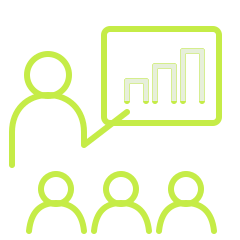
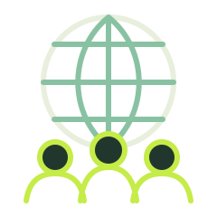

Der skal komme noget ud af det.
Jeg holder kurser, udvikler undervisningsforløb og leder faglige processer for skoler, kommuner og organisationer. Jeg vil gerne være med til at prøve idéerne af, så vi ved, om de fungerer i hverdagen.
Det skal også virke mandag morgen.
En god plan er ikke meget værd, hvis ingen får den brugt.
På et kursus i Google Classroom arbejder deltagerne selv med værktøjet. I naturfagsredaktionen taler vi både om faglig præcision og om, hvad eleverne skal gøre med stoffet. To forskellige opgaver. Men begge kræver, at vi ser på det, der skal ske i praksis.
Jeg foretrækker at udvikle løsninger sammen med dem, der skal bruge dem. Så opdager man hurtigere det, man ikke kunne tænke sig til på forhånd.
Kurser, læremidler, teknologi og faglig ledelse.
Opgaverne kan være alt fra en enkelt workshop til et længere redaktionelt eller fagligt udviklingsforløb.
Faglig ledelse & udvikling
Rekruttering, sparring, koordinering og kvalitetssikring. Erfaring fra et redaktionelt team med 11 forløbsbyggere.
Kompetenceudvikling & facilitering
Workshops og kompetenceforløb for lærere, pædagoger, it-ansvarlige og ledere.
Teknologiforståelse & AI
Otte år med iværksætteri som valghold og nu teknologiforståelse i udskolingen. Fra programmering til kritisk brug af AI.
Læringsdesign & formidling
Undervisningsforløb og fagligt indhold, der kan anvendes direkte i undervisningen.
Et udvalg fra arbejdsbordet.
Et udsnit af projekter fra mine roller som konsulent, fagredaktør, lærer og frivillig leder.
Kurser i fire kommuner
Workshops for lærere, ledere og it-ansvarlige i fire kommuner. Blandt andet Google Workspace for daginstitutionsledere i Vesthimmerland.

11 forløbsbyggere. Ét fagligt ansvar.
Rekruttering og ledelse af 11 forløbsbyggere, redaktionel retning og kvalitetssikring.

Over 120 deltagere fra 16 lande
Instruktørudvikling, kulturmøder og større internationale træningsarrangementer.

Det at eleverne ikke bare er forbrugere af medier og teknologi, men selv bliver producenter, det er nok det vigtigste.
Thorbjørn Hartelius · fra IRIS’ udviklingsrapport ↗
Fortæl mig, hvad I står med.
Skriv et par linjer om jeres opgave, så kan vi finde ud af, hvad jeg kan bidrage med.